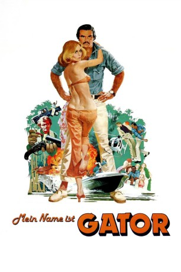

#8416 Mein Name ist Gator
Alternativ: Gator
 
 IMDB-Wertung: 5.8 / 10
IMDB-Wertung: 5.8 / 10  Metascore: 0
Metascore: 0 
Gator McKlusky wird wegen Schwarzbrennerei zu einer Haftstrafe verurteilt. Nach der Entlassung aus dem Gefängnis wohnt er bei seinem Vater, der weiterhin illegal Alkohol herstellt. FBI-Agenten wenden sich an Gator und fordern von ihm, dass er bei der Überführung des mit ihm befreundeten Bandenchefs Bama McCall hilft. Andernfalls soll er erneut verhaftet werden. McKlusky willigt ein und unterwandert die Organisation McCalls. Dabei lernt er die Fernsehreporterin Aggie Maybank kennen, in die er sich verliebt und mit der er eine Beziehung beginnt.
Jahr: 1976
Dauer: 111 Minuten
FSK: 12
Land: USA Studio: United ArtistsTonspuren: DD5.1 - ,
Untertitel:
Auflösung: 1080p (1920x1080) Größe: 7833 MB
Genre: Action, Drama, Krimi
Regisseur:  Burt Reynolds
Burt Reynolds
Drehbuch: William W. Norton
Soundtrack: Charles Bernstein
Darsteller:
 Burt Reynolds als Gator McKlusky
Burt Reynolds als Gator McKlusky Jack Weston als Irving Greenfield
Jack Weston als Irving Greenfield Lauren Hutton als Aggie Maybank
Lauren Hutton als Aggie Maybank Jerry Reed als Bama McCall
Jerry Reed als Bama McCall Alice Ghostley als Emmeline Cavanaugh
Alice Ghostley als Emmeline Cavanaugh Dub Taylor als Mayor Caffrey
Dub Taylor als Mayor Caffrey- Mike Douglas als The Governor
- John Steadman als Ned McKlusky
- Robert Urquhart als 3rd Agent
 Sonny Shroyer als 4th Agent
Sonny Shroyer als 4th Agent Charles A. Tamburro als Helicopter Pilot
Charles A. Tamburro als Helicopter Pilot James Best als (unconfirmed)
James Best als (unconfirmed) Ned Beatty als Sheriff J.C. Connors (uncredited)
Ned Beatty als Sheriff J.C. Connors (uncredited) Burton Gilliam als Smiley
Burton Gilliam als Smiley- William Engesser als Bones
- Lori Futch als Suzie McKlusky
- Stephanie Burchfield als Young Girl
- Dudley Remus als Deputy Pogie, Dunston PD
- Alex Hawkins als Police Chief
- J. Don Ferguson als Bartender
- John P. Rousakis als Ocean Plaza Motel Manager
- Patrick Moody als Patrick, Young Policeman
- John Nicholson als Jack Bridger
- Tommy Anderson als Waiter
- Georgetta Blair als Storekeeper
- Rick Allen als Donahue
- Cornelia Lawsen als Cornelia, Hat Check Girl
- George A. Jones als Big George
- Stephen J.J. Wilder als J.J.
- Gwen Ferguson als 1st Nurse
- Mary Sharpe als 2nd Nurse
- Jim Burk als Sheriff Williams
- Dick Ziker als Deputy
- Bud Miller als Old Fisherman
- J.B. Pappas als Drunk
- Jim Rainwater als 1st Agent
- John B. Lastinger als 2nd Agent
- Watson B. Duncan III als Official
- Albert Weis Jr. als Boy on Telephone
- Albert W. Garmany III als Boy on Telephone
- Bob Yeager als Man in Hospital
- Paul Hansen als 2nd Policeman
- William J. Booten Sr. als 3rd Policeman
- Robert Smith als 4th Policeman
- Kim Trawick als Tinker
- Norman Evans als Helicopter Co-pilot
- Gus Carlucci als Doctor
- Dan Everett als Bouncer
- Eric G. Mitchell als Marching Band Member (uncredited)
Datei: X:\1976\Mein Name ist Gator (1976, FSK12, 1920x1080).mkv seit 01.03.2018
Festplatte: HD 1971-1979
 Es gibt insgesamt 31 Filme in der Gruppe '1976'
Es gibt insgesamt 31 Filme in der Gruppe '1976'